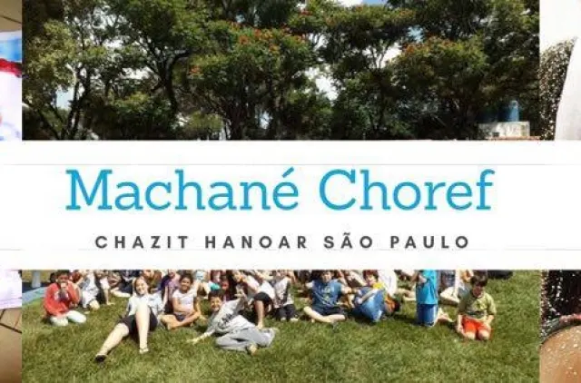

A peulá
A atividade da tarde, preparada pelos madrichim da kvutzá. Jogo, dinâmica, debate — sempre com um conteúdo e objetivos por trás, coerentes com a nossa ideologia.
Desde 1959, em São Paulo, jovens educam jovens. Todo sábado, das 14h às 18h, crianças e adolescentes se encontram em grupos por idade para brincar, discutir, discordar e construir juntos aquilo em que acreditam.
חזק ועלה
O ano em que o grêmio juvenil que viraria a Chazit nasceu dentro da CIP.
Chanichim em média a cada sábado de peulut, do 1º ano do fundamental ao ensino médio.
Machanot por ano — uma de kaitz (verão) e uma de choref (inverno).
Snifim na América do Sul: São Paulo, Rio de Janeiro, Porto Alegre e Montevidéu.
Quem prepara a atividade de sábado é um madrich de 17, 18, 20 anos — alguém que passou por todas as kvutzot e escolheu continuar. É essa proximidade que faz a conversa acontecer.
A atividade da tarde, preparada pelos madrichim da kvutzá. Jogo, dinâmica, debate — sempre com um conteúdo e objetivos por trás, coerentes com a nossa ideologia.
No fim do sábado toda a tnuá se reúne: avisos, comemorações, a havdalá e o hino. Termina sempre com o “Chaverim Chazak — Chazak Ve’alê”.
Duas viagens por ano, no verão e no inverno, onde a vivência de grupo ganha dias inteiros: peulot, tekes, iom laila, sichá.
Nossa frente de ação social, criada em 2019. Escolhe um tema, junta chanichim e peilim e age junto com ONGs e instituições que já trabalham pela cidade.
Os chanichim são divididos pela série da escola. Ano após ano, o grupo caminha junto — do primeiro ano do fundamental até virar madrich.
Sementes, sapecas, asfaltadores, artesãos e heróis. A entrada na tnuá, no ritmo de quem está aprendendo a viver em grupo.
Conquistadores, brotos, jovens e revolucionários. É quando o debate entra de vez: identidade, Israel, o mundo e o lugar de cada um nele.
Horizontes e trabalhadores. Os dois últimos anos de chanichut, já com o processo de formação para a hadrachá começando.
A peilut: quem virou madrich, quem está indo para o Shnat Hachshará em Israel e quem voltou de lá para seguir conduzindo a tnuá.
Não são frases de parede: são textos discutidos e aprovados em asseifá, com os questionamentos que ficaram em aberto anotados junto.
Poder fugir dos padrões sem ser julgado — e entender que a liberdade coletiva vale mais do que a individual.
Ler →O meio ambiente não é o palco onde agimos: é parte de nós.
Ler →Ponto de partida de tudo o mais, e por isso o diálogo está no centro da nossa concepção educativa.
Ler →Que o acesso ao que a sociedade produz não dependa de onde cada um nasceu.
Ler →Peulá, kvutzá, madrich, machané, mifkad. A gente sabe. Tem uma página inteira para responder o que os pais costumam perguntar e um dicionário com mais de mil verbetes de hebraico, herdado da Chazit de Porto Alegre.

A porta está aberta a qualquer sábado do ano letivo. Escreva para a gente contando a idade do seu filho ou da sua filha e a gente conta o resto.